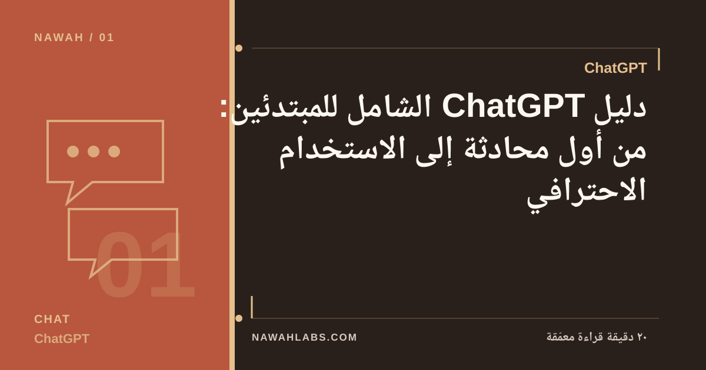
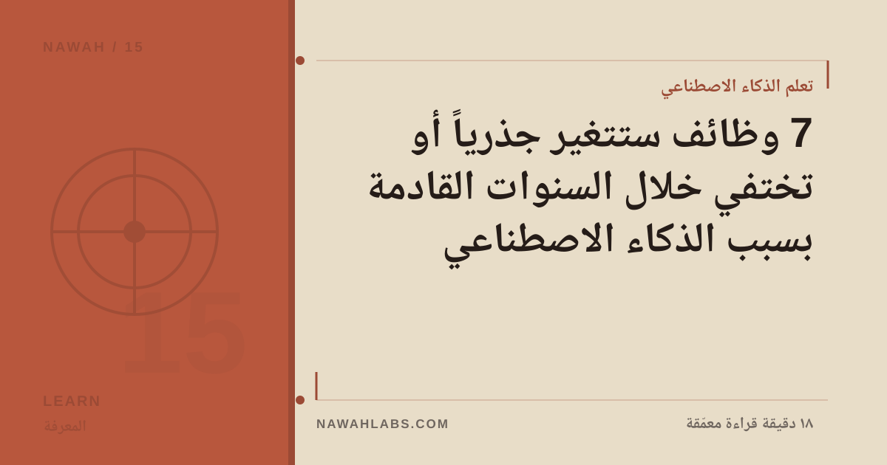
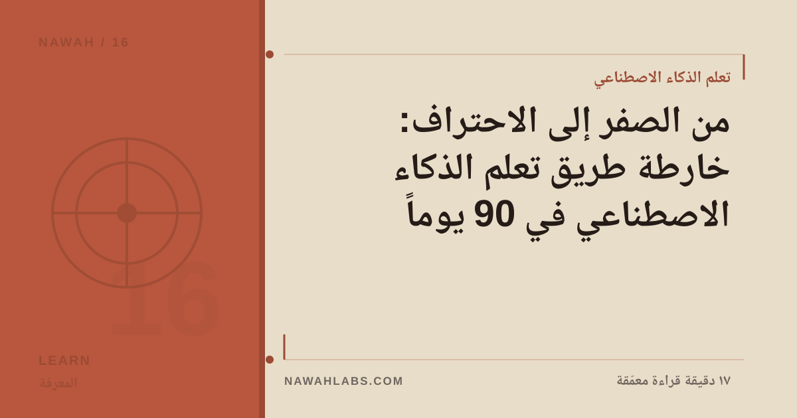
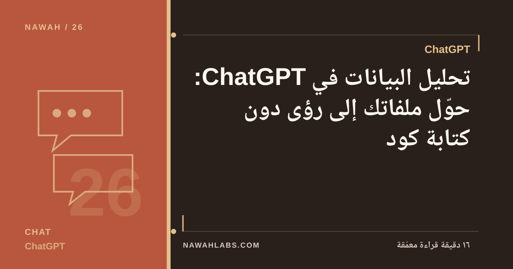
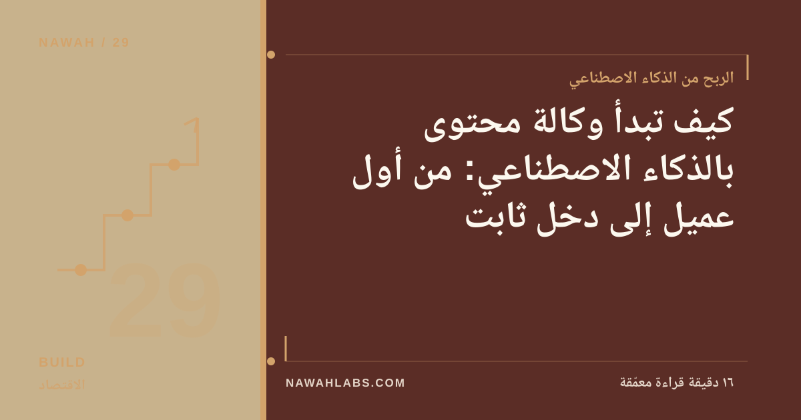
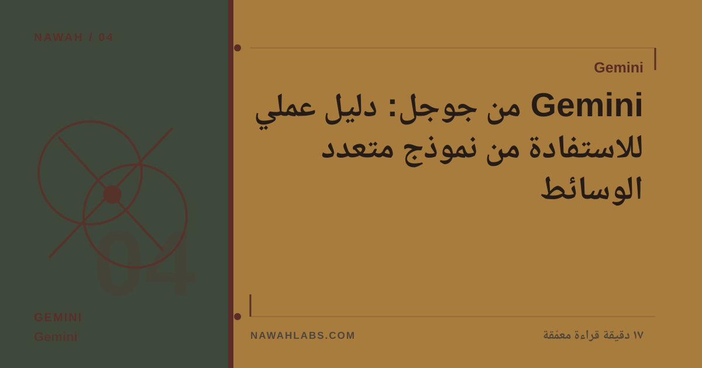
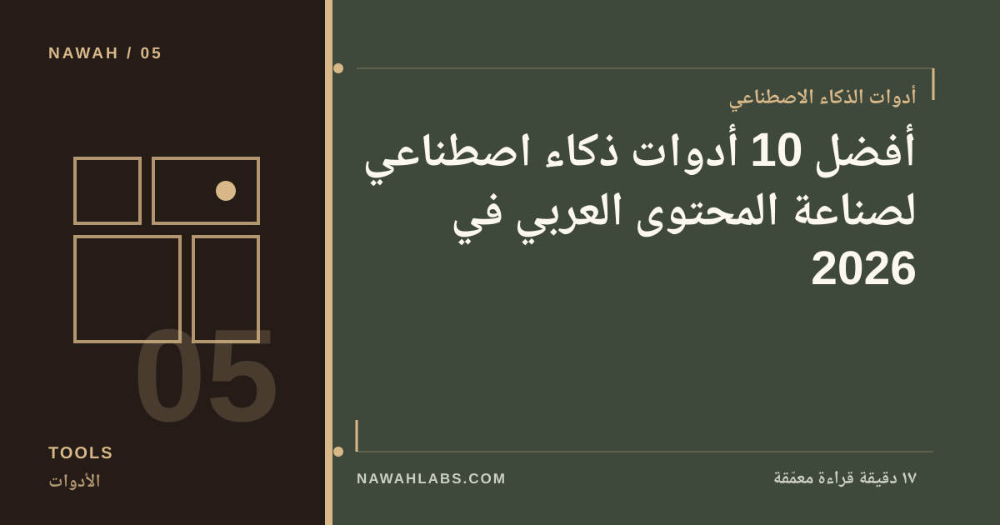
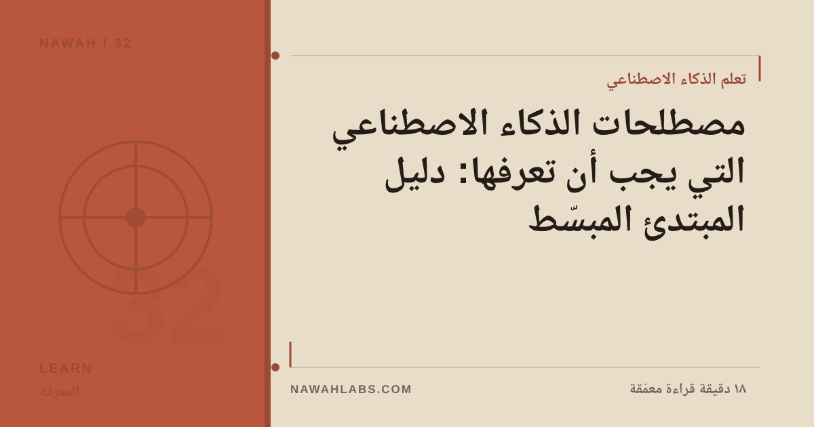
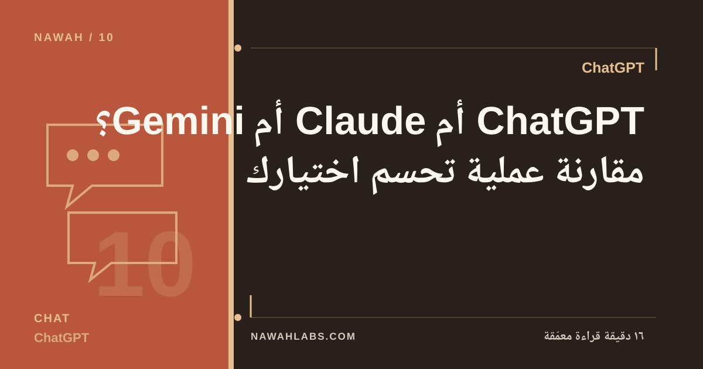

Claude
دليل Claude الشامل: المساعد الأقوى في الكتابة والمستندات الطويلة
كل ما تحتاجه لإتقان Claude: المشاريع، التطبيقات المصغّرة، تحليل المستندات الضخمة، ومتى يتفوق على غيره.
35 مقالاً مصنّفة وقابلة للتصفية والبحث.
كل ما تحتاجه لإتقان Claude: المشاريع، التطبيقات المصغّرة، تحليل المستندات الضخمة، ومتى يتفوق على غيره.

إطار عملي من 5 خطوات لبناء مشروع ذكاء اصطناعي مربح بمهاراتك الحالية فقط، بلا سطر برمجة واحد.

القائمة الشاملة المصنّفة: مساعدات، كتابة، صور، فيديو، صوت، برمجة، أتمتة، وإنتاجية، مع تحديد متى تحتاج كلاً منها.

دليل عملي لإعداد مشاريع Claude وكتابة تعليمات مخصّصة تجعل المخرجات متّسقة ودقيقة دون إعادة شرح في كل مرة.

كل ما تحتاجه لتبدأ مع ChatGPT بالطريقة الصحيحة: الإعداد، الفرق بين الخطط، وأهم الاستخدامات العملية.

مقارنة منهجية على 6 محاور: الأسعار، نوافذ السياق، الكتابة العربية، البرمجة، الوسائط، والخصوصية، بنتائج اختباراتنا.

كيف تستفيد من Gemini داخل منظومة جوجل، وقدراته في الصور والفيديو والمعلومات الحديثة، ومتى يكون خيارك الأول.

أنواع التعلم الآلي الثلاثة، دورة حياة المشروع، ومثال كشف الاحتيال البنكي.

دليل توعوي: أشهر 5 أساليب احتيال مدعومة بالذكاء الاصطناعي، وعلامات كشفها، وقواعد الحماية العملية.

استخدامات ملموسة لـGemini في البريد والمستندات والجداول والاجتماعات، مع موجهات جاهزة لكل حالة.

سبع تقنيات عملية لصياغة موجهات احترافية تحصل بها على نتائج أدق من أي نموذج ذكاء اصطناعي.

قراءة هادئة بعيداً عن التهويل: أي الوظائف في دائرة الخطر فعلاً، وأيها يتحول، وكيف تحصّن مسارك المهني.

دليل خطوة بخطوة لبناء مساعد GPT مخصّص لمهامك المتكررة، وتزويده بمعرفتك الخاصة، ومشاركته مع فريقك.

رحلة الشبكات العصبية من البيرسبترون إلى Transformers بلغة مبسطة.

خطة مكثفة يوماً بيوم لمن يستطيع التفرغ الجاد: 3 مراحل، 6 مشاريع، ونتيجة ملموسة في نهاية كل أسبوعين.

كيف تستخدم ChatGPT لتحليل ملفات Excel وCSV: التنظيف، الرسوم البيانية، اكتشاف الأنماط، والتقارير الجاهزة.

تعرف على مساعد Anthropic الذكي: نقاط قوته في المستندات الطويلة والكتابة والبرمجة، وكيف تستفيد منه.

ما الفرق بين روبوت المحادثة والوكيل الذكي؟ وكيف ستعيد الوكلاء تشكيل العمل والتسوق والبرمجة؟ شرح شامل.

كيف تربط أدواتك وتؤتمت مهامك المتكررة دون برمجة، مع مقارنة بين أشهر ثلاث منصات وأمثلة مسارات جاهزة.

تشريح واقعي لحلم «شركة الشخص الواحد»: ما الذي تنجزه الأتمتة فعلاً، وما الذي يبقى بشرياً بالضرورة؟

جولة في أقوى أدوات توليد الصوت والفيديو: التعليق الصوتي، المقدّم الافتراضي، المونتاج التلقائي، والدبلجة.

جولة تطبيقية في أربعة قطاعات مع دراسات حالة واتجاهات المستقبل.

6 مشاريع مجرّبة بميزانية تأسيس لا تتجاوز 500 ريال: التكلفة التفصيلية، وخطة أول شهر، ومتى تتوقع أول دخل.

خطة عملية لبناء وكالة محتوى صغيرة مدعومة بالذكاء الاصطناعي: الخدمات، التسعير، إيجاد العملاء، والتوسّع.

كيف تستفيد من تكامل Gemini مع بحث جوجل وGmail وDocs، وأبرز حالات استخدامه متعددة الوسائط.

خريطة الفرص الخليجية: لماذا المنطقة من أفضل أسواق العالم لهذا التخصص، وأين الطلب الفعلي، وكيف تدخل منه؟

كيف تطلق منتج برمجياً صغيراً يحل مشكلة محددة بمساعدة الذكاء الاصطناعي، من الفكرة إلى أول عميل دافع.

المبادئ الأساسية للاستخدام الأخلاقي للذكاء الاصطناعي: الخصوصية، الانحياز، الشفافية، وحقوق المحتوى.

قائمة مختبرة بالأدوات الأجدى لكتّاب المحتوى وصنّاعه بالعربية: الكتابة، الصور، الصوت، والفيديو.

شرح مبسّط لأهم 15 مصطلحاً في الذكاء الاصطناعي تقابلها يومياً، بلغة واضحة وأمثلة من الحياة.

مسارات دخل حقيقية يمكن البدء بها اليوم: من الخدمات المصغرة إلى المنتجات الرقمية، مع متطلبات كل مسار.

من اختيار الفكرة إلى أول عملية بيع: خارطة عملية لبناء دخل من المنتجات الرقمية بمساعدة الذكاء الاصطناعي.

مسار تعلم واضح من 4 مراحل مع مدد زمنية واقعية ومصادر مقترحة لدخول مجال الذكاء الاصطناعي.

كيف تبني مسارات عمل تلقائية تربط أدواتك بالنماذج الذكية وتوفر ساعات أسبوعياً، مع 3 أمثلة جاهزة.

مقارنة ميدانية بين المساعدات الثلاثة الكبرى على مهام حقيقية: الكتابة، البرمجة، التحليل، والعربية.